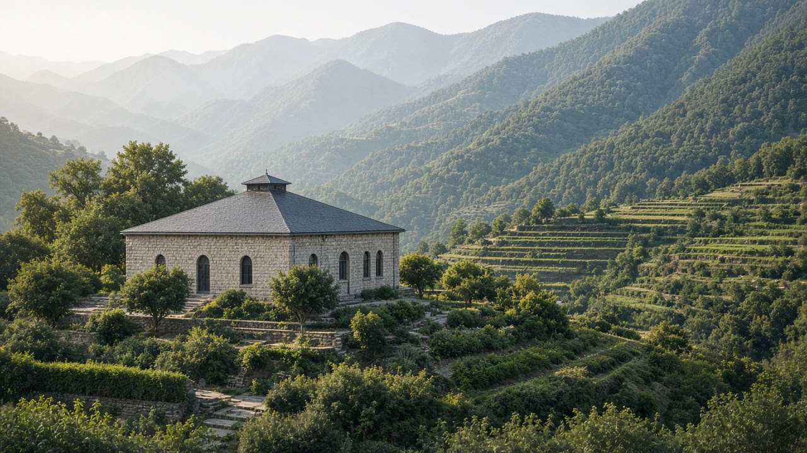

Environmental Policy & Economics
वातावरणीय नीति र अर्थशास्त्र

Possible subtopics to explore for environmental governance, economic instruments, and policy design.
वातावरणीय नीति र अर्थशास्त्र

Possible subtopics to explore for environmental governance, economic instruments, and policy design.